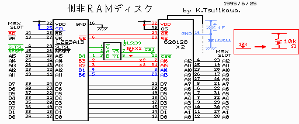

２ 道具を手に取る前に（この章では道具は使いません）
回路図をよく見て下さい。 回路図では黒以外の実線でかかれたところが主な改造場所を示しています。
ＬＳ１３９は電源やＧＮＤを省略してあります。
また、回路図ではＡ１５とＡ１６をひとつずつしか書いてありませんが、実際には表に付けるＳＲＡＭと裏に付けるＳＲＡＭとで２本ずつ必要です。
三角印の上に１０ｋと書いてある部分はその信号線（／ＣＳ（２２））と５Ｖの間に１０ｋオームの抵抗をつけることを意味しています。 表裏のＳＲＡＭでそれぞれ１本ずつ付けます。
本文で、／＊＊と書いてある信号線は、回路図では＊＊に上線がついているものです。
ＳＲＡＭの／ＯＥやＬＳ１３９の／ＧやＡはそれぞれ、図の左側に黒くかかれた信号／ＲＤ、／ＳＬＴＳＬ、／ＲＥＳＥＴにつながっています。 これらの信号は図からも分かるようにＭＳＸのスロットからメガＲＯＭコントローラにつながっており、どちらにつなげてもかまいません。
配線のコツとしては、ジャンパーは極力基板の裏側に通すとすっきりします。 表側のＡ１５、Ａ１６、抵抗の３つ以外はすべて裏に配線しましょう。

図１ 似非ＲＡＭディスクの回路図